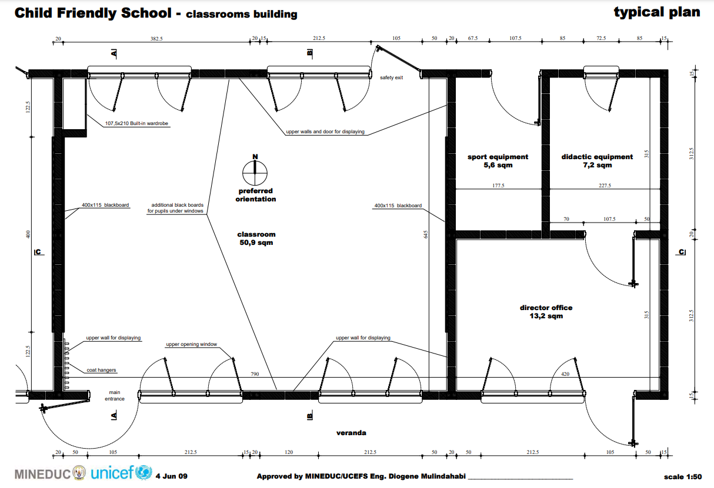
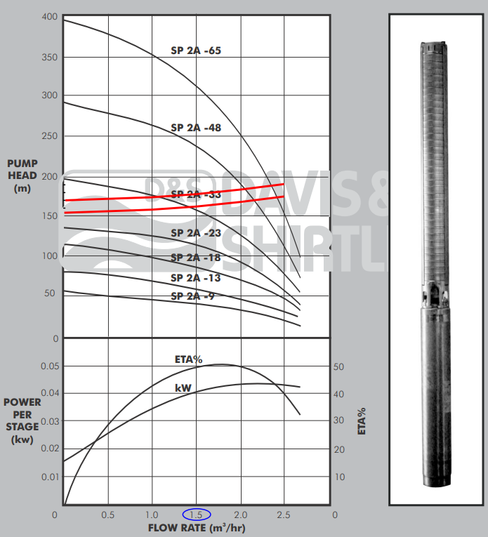

Microgrid Design and Simulation: Solar Pumping
GROUP NAMES: Thomas Hudson, Zhen-Yu, Yen-Chun
Project Type: Solar Pumping
October 31, 2024
Contents
Solar Pumping Microgrid - Description and Overview
This microgrid project includes non-grid supplied power systems for domestic water supply and electrical lighting serving a small community in Uganda.
In Uganda clean, potable water is often attained from vertical boreholes where aquifers are available. Hand pump kiosks allow for manual extraction of water but this is not effective for larger communities where community members face long wait times (figure 1.1).

Figure 1.1: People waiting to pump water.
This microgrid project develops electric power to pump domestic water from a borehole to a water storage tank. The system is designed to serve a community of 1800 persons. Figure 1.2 shows a general solar pumping diagram.

Figure 1.2: General components for solar water pumping.
Microgrid design permaeters for our community are based on an Engineering Without Borders 2020 implementation report by the Penn State University chapter of Engineers Without Borders. The chapter worked with the community of Namutamba for several years to understand design requirements such as daily water volume requirements and water storage.
Water storage is required for buffering against cloudy days when the microgrid power source for water pumping is not available.
This microgrid project includes electrical power and electrical storage requirements to serve a small school house. Electrical stroage is required for inclement weather where daily power resources fall below average.
Microgrid projects (non-grid tied) with similar designs are implemented by Engineers Without Borders chapters in a number of African countries. Figure 1.3 shows solar projects in Uganda and Kenya where each colored circle indicates a solar installation. Reasons for solar adoption are solar can be more reliable than grid power, less expensive than grid power, and solar can be erected where needed.

Figure 1.3: EWB Solar Installation Projects.
Satellite images (figure 1.4) show large open areas that favor solar installation sites. The community is low density with few structurs and land use includes agriculture. The Pen State University chapter has completed reports describing the demographic and socioeconomic profiles for the community.

Figure 1.4: Satelite image of Uganda community.
The community is located at:
- latitude: 0.5345
- longitude: 32.0877
Load Calculations
This project is designed to power both a water pump and electrical loads for a small school house.
Load Calculations - Electrical Lighting
The school house floor plan is shown 2.1 with a floor area of 77 sqm (UNICEF architectural designs for schools in Rwanda).

Figure 1.2: School house drawing.
The project scope for the school house includes power for lighting and a few small plug loads for computers and a printer.
Electrical lighting power continues to fall with the apoption of LEDs. Several US states have adopted the 2021 International Energy Conservation Code (IECC) standards, including its lighting power density (LPD). The 2021 IECC standards (LPD) is 0.71 watts per square foot(w/sqft) or 7.64 w/sqm. These standards are appropriate for this project as LED lighting is available in Uganda.
Plug Load estimates include 4 laptops and a small printer. Laptops are estimated to run 30watts per device and operational 24 hrs/day. A small printer is estimated to draw 50watts and is operational 24 hrs/day.
School Electrical Lighting and Power
Electrical_Power_Use = 7.64 * 77; % 77sqm = 588 watts Laptops = 4 * 30; % watts/each = 120 watts Printer = 50; % watts Total_Plug_Power = 120 + 50; % total power plug loads: 170 watts Total_Power_School = Electrical_Power_Use + Total_Plug_Power; % total power all loads 758 watts fprintf('Electrical_Power_Use: %0.1f watts \n',Electrical_Power_Use) fprintf('Total_Plug_Power: %0.1f watts \n',Total_Plug_Power) fprintf('Total_Power_School: %0.1f watts \n',Total_Power_School) % *Daily Use Assumptions* % School Operational Hours: 6 days/week 8am-5pm with 2 hour evening classes % 3 times per week. % % Total Operational Hours per week = 6days * 9hrs + 3days * 2hrs = 60 hrs % % *Energy Use School* Energy_Lighting = 60 * 52 * Electrical_Power_Use/1000; % = 1,834 kWh Energy_Plug_Loads = 24 * 365 * Total_Plug_Power/1000; % 1,489 kWh Total_Energy_School = Energy_Lighting + Energy_Plug_Loads; %kWh fprintf('Energy_Lighting: %3.f kWh \n',Energy_Lighting) fprintf('Energy_Plug_Loads: %3.f kWh \n',Energy_Plug_Loads) fprintf('Total_Energy_School: %3.f kWh \n',Total_Energy_School) % % This estimate includes no safety margins for estimated electrical % lighting power or lighting schedules at this time. %
Electrical_Power_Use: 588.3 watts Total_Plug_Power: 170.0 watts Total_Power_School: 758.3 watts Energy_Lighting: 1835 kWh Energy_Plug_Loads: 1489 kWh Total_Energy_School: 3325 kWh
Load Calculations - Domestic Water Pumping
Uganda has a national water standard of 20 liters per day per person. Our community of 1,800 persons requires 36,000 liters per day. The average water flow is calculated to be 1,500 liters/hr to deliver the reqiured volume in a 24 hour period. This initial opperational assumption is that electrical power is available 24 hours a day.
The total static head pressure required includes the depth of the well and head pressure to move the water from the well to a reservoir. The total dynamic head pressure is estimated at 154 to 170 meters.
A datasheet selected to meet the demand of pressure and flow is shown on figure 2.2. The pumps listed can deliver 1,500 liters/hr and the red lines indicate the requred band of 154 to 170 meters. SP 2A-48 can deliver the flow and pressure required. Another pump not shown on this data sheet is SP 2A-40 that lies junst under SP 2A-48 and can deliver the flow at that specified pressure. This pump has a 2.2kw (3hp) motor. The datasheet shows 0.04 kW power per stage and the SP 2A-40 has '40 stages.' The pump power is then given as 0.04 kw x 40 stages for 1.6kW. Pump selection is well within the estimated requiremetns but no pumping power safetly margins are included in these calculations at this time.

Figure 2.2: Grundfos pump data sheet. The red lines indicate the operational band.
Pump_power = 0.040 * 40; %1.6kW fprintf('Pump_power: %0.1f kW \n',Pump_power) % % *Energy pumping power* % As with the electrical lighting, this assessment assumes power is % available 24 hours a day for pumping. The pumping energy estimate is % therefore given as: % Annual_Pumping_energy = Pump_power * 365 * 24; % 14,016 kWh fprintf('Annual_Pumping_energy: %3.0f kWh \n',Annual_Pumping_energy) % % Under this assessment the reservoir will be sized to hold sufficient % water for daily use fluctuations but the pump will continuously fill the % reservoir and the peak power will match the pump power: 1.6kW. %
Pump_power: 1.6 kW Annual_Pumping_energy: 14016 kWh
Load Calculations - MicroGrid Peak Power
The current estimated loads assume power is always available. The total electrical lighting loads and pumping loads are given as:
758watts + 1.6kW = 2.36 kW
Peak_Power = Total_Power_School/1000 + Pump_power; % 2.36 kW fprintf('Peak_Power: %2.2f kW \n',Peak_Power)
Peak_Power: 2.36 kW
Load Calculations - MicroGrid Annual Energy Use
The annual energy usage includes electrical lighting and pumping energy and is given as:
3,323 kWh + 14,016 kWh = 17,339 kWh
Annual_Energy_Use = Total_Energy_School + Annual_Pumping_energy; %3,323 kWh + 14,016 kWh = 17,339 kWh fprintf('Annual_Energy_Use: %3.0f kWh \n',Annual_Energy_Use)
Annual_Energy_Use: 17341 kWh
Load Calculations - MicroGrid Load Factor
This inital design reflects the 'grid like' access to electrial power; that is, electrical power is assumed to be available when needed from microgrid resources. The 1.6kW pumping power will likely be constant as it has been sized for 24 hour operation. If the pump does turn off it will occur when little water is being used (at night) and once the reservoir has been filled. Electrical lighting power usage is shown here to operate during a Monday through Saturday and 8am - 6pm schedule and contributes to the lower load factor.
The load factor is given as Total Annual Energy Use / (Peak Demand * 365 days)
Load_factor = Annual_Energy_Use/(Peak_Power * 24 * 365);
fprintf('Load Factor: %0.2f \n\n\n',Load_factor)
Load Factor: 0.84
References
- Reference for IECC Lighting Power Density: href="https://www.archtoolbox.com/recommended-lighting-levels/"link</a>
- 2019 Solar Prices for Kenya: https://energypedia.info/wiki/File:Solar_Prices_KE_Matrix.xlsx
- Solar Powered Water Guidlines Rwanda: https://drive.google.com/file/d/1lrx7iS9qK3hgrIIGmuUqderht0T_6Wgs/view?usp=sharing
Start with a few sentence description of the load and its characterstics. You'll need to determine the daily kWh of your load, and the load factor. (The load factor is the ratio of daily average power to daily peak power; see the instructions for more discussion). Include all assumptions and calculations. 2 pts for a good description of how you arrived at your estimated daily kWh load. 2 pts for a description of how you arrived at an estimate of load factor. 1 pt for neatness and completeness.